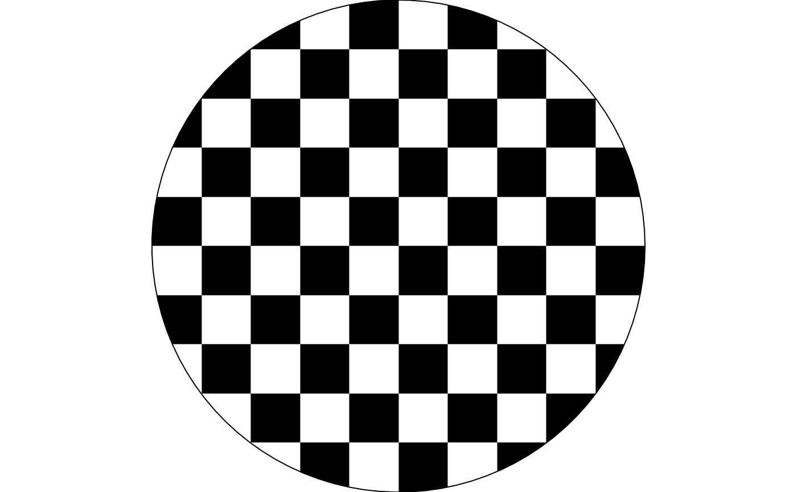

Checkerboard pattern fill
fill_checker.Rdfill_checker() builds a grid::pattern() fill value that renders a
two-colour checkerboard. It's the cheapest member of the hatch family to
build: a checkerboard square has no direction the way a hatch line does
(compare fill_hatch()'s corner-to-corner diagonal, needed specifically
to tile a sloped line seamlessly), so the tile content here is just
four plain quadrant rectangles – the same two-colour-grid special case
fill_crosshatch() already falls back to when angle is a multiple of
90 degrees, pulled out into its own helper.
Usage
fill_checker(
color1 = "black",
color2 = "white",
spacing = 0.2,
aspect = 1,
extend = "repeat"
)Arguments
- color1, color2
The two checker colours. Defaults
"black"and"white".- spacing
Baseline tile size, as a fraction of the target's bounding box. Must be a positive number. Default
0.2.- aspect
Width-to-height ratio of the target polygon's bounding box. Must be a positive number. Default
1(a square bounding box).- extend
Passed to
grid::pattern(). Default"repeat".
Value
A pattern object as returned by grid::pattern(), suitable for
use as the fill argument to grid::gpar().
Details
As with the other fill_*() helpers, grid::pattern() tiles are sized
as a fraction of the target polygon's own bounding box rather than a
fixed physical square, so the checker squares would render as
rectangles, not squares, on a non-square bounding box. Pass the target's
width-to-height ratio as aspect to correct for this – the same tile-
squaring technique fill_stipple() uses for its dots – so the default
aspect = 1 is only exact for a square bounding box.
Examples
draw(shape_circle(fill = fill_checker(color1 = "black", color2 = "white")))
